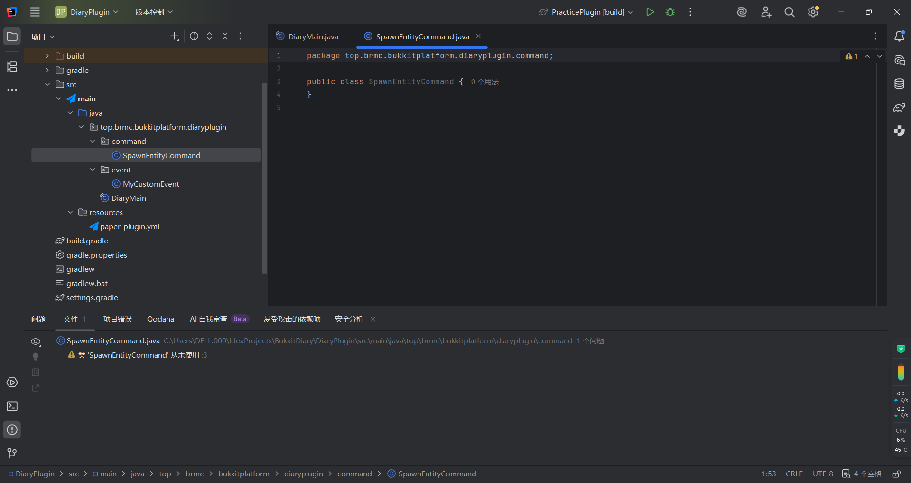
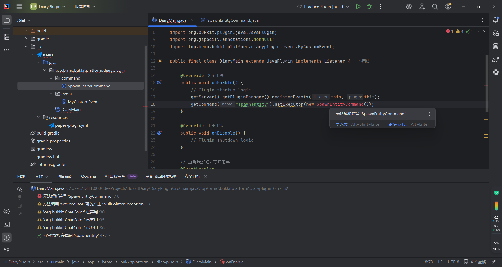
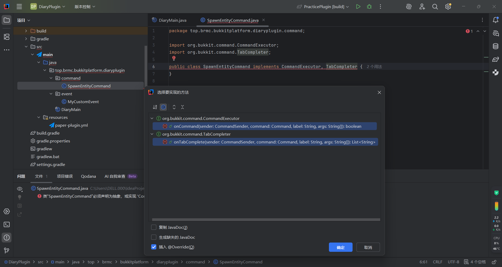
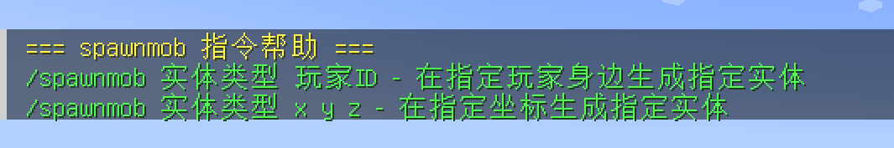

人物：JS学姐
身份：初来乍到而又勤奋好学的萌新玩家
任务目标：理解命令系统处理逻辑并制作插件
难度：★★☆☆☆
JS学姐今天有些困惑。她在好朋友V10的邀请下加入了某小游戏服务器，丰富的游戏玩法使她大为震惊。她尝试接受好友邀请后，发现输入了/friend之后如果忘记输入操作类型和好友ID，服务器还会提示她命令哪里出现了问题。
她决定专门抽出时间研究为什么命令系统可以根据玩家的输入反馈不同内容并且执行不同操作...
日志记录：从 sout 到 Logger
众所周知，Minecraft 客户端和服务端都是基于 Java 实现的。当我们试图调试或记录插件运行状态时，Logger 系统比简单的输出更加专业。虽然可以使用 System.out.println()，但它缺乏等级管理且不会被持久化记录。
@NotNull@Overridepublic Logger getLogger() { return logger;}logs 文件夹中。通过 severe 级别输出的错误在控制台中通常会以红色显示，非常醒目。从原版命令到插件命令
在原版MC中已经支持了一些简单的命令。例如/gamemode切换游戏模式、/tp传送玩家。但很多大型服务器都有自己的玩法和命令，插件是如何做到的？这就要提到我们本节重点：
回顾：已学的事件监听
根据之前的学习，我们已经学会了简单的事件监听方法和如何创建自定义事件。以下是主类的结构：
package top.brmc.bukkitplatform.diaryplugin;
import org.bukkit.ChatColor;
import org.bukkit.event.EventHandler;
import org.bukkit.event.Listener;
import org.bukkit.event.block.BlockBreakEvent;
import org.bukkit.event.block.BlockPlaceEvent;
import org.bukkit.plugin.java.JavaPlugin;
import org.jspecify.annotations.NonNull;
public final class DiaryMain extends JavaPlugin implements Listener {
@Override
public void onEnable() {
getServer().getPluginManager().registerEvents(this, this);
}
@Override
public void onDisable() {
// Plugin shutdown logic
}
// 监听玩家破坏方块的事件
@EventHandler
public void onBlockBreak(@NonNull BlockBreakEvent event) {
event.setCancelled(true);
event.getPlayer().sendMessage(ChatColor.GOLD + "破坏方块事件被取消.");
}
@EventHandler
public void onBlockPlace(@NonNull BlockPlaceEvent bpe) {
// 放置方块事件逻辑...
}
}package top.brmc.bukkitplatform.diaryplugin.event;
import org.bukkit.event.Event;
import org.bukkit.event.HandlerList;
public class MyCustomEvent extends Event {
private static final HandlerList handlers = new HandlerList();
@Override
public HandlerList getHandlers() {
return handlers;
}
public static HandlerList getHandlerList() {
return handlers;
}
// 自定义事件属性与方法...
}插件的"身份证"：plugin.yml
要想学习创建命令系统，必须了解Bukkit服务器文件架构中的 plugin.yml。基于正确的项目创建方法，IDEA已经为我们自动创建了src/main/resources文件夹，其中包括plugin.yml：
name: DiaryPluginversion: '1.0-SNAPSHOT'main: top.brmc.bukkitplatform.diaryplugin.DiaryMainapi-version: '1.21'authors: - JS # 你亲爱的JS学姐不是JavaScript啊喂...description: 我的插件在现有配置下方添加命令注册：
什么？你不知道什么是YAML文件？呃...先这样Copy进去，听话awa~在后续处理自定义config.yml和自定义配置文件的时候我们会详细说明的~
name: DiaryPluginversion: '1.0-SNAPSHOT'main: top.brmc.bukkitplatform.diaryplugin.DiaryMainapi-version: '1.21'commands: spawnentity: description: 生成一只怪物 usage: /spawnentity <实体名> <玩家|x y z>只要添加commands根键名以及一级子键命令名称就足以让插件识别命令，暂时不需要添加更多内容，后续我们可以自己实现更智能的提示！
创建命令类与注册
新建命令类软件包并且新建SpawnEntityCommand类：

在插件初始化时注册命令执行器。注意getCommand("spawnentity")要与plugin.yml中设置的命令名称一致：
package top.brmc.bukkitplatform.diaryplugin;
import org.bukkit.ChatColor;
import org.bukkit.event.EventHandler;
import org.bukkit.event.Listener;
import org.bukkit.event.block.BlockBreakEvent;
import org.bukkit.plugin.java.JavaPlugin;
import org.jspecify.annotations.NonNull;
import top.brmc.bukkitplatform.diaryplugin.command.SpawnEntityCommand;
public final class DiaryMain extends JavaPlugin implements Listener {
@Override
public void onEnable() {
getServer().getPluginManager().registerEvents(this, this);
// 注册命令执行器与Tab补全
SpawnEntityCommand spawnCmd = new SpawnEntityCommand();
getCommand("spawnentity").setExecutor(spawnCmd);
getCommand("spawnentity").setTabCompleter(spawnCmd);
}
@Override
public void onDisable() {
// Plugin shutdown logic
}
@EventHandler
public void onBlockBreak(@NonNull BlockBreakEvent event) {
event.setCancelled(true);
event.getPlayer().sendMessage(ChatColor.GOLD + "破坏方块事件被取消.");
}
}
根据Bukkit设计原理，Command实例必须实现CommandExecutor和TabCompleter接口。IDEA会自动提示需要实现的方法：

实战：生成实体命令 (SpawnEntityCommand)
我们应当在onCommand方法中设计此命令执行的具体逻辑，在onTabComplete方法中设计Tab补全逻辑。由于命令的处理是一套系统逻辑，如果单独拆分分析，结论会是Java基本原理，相对不符合我们掌握命令系统的具体需求。所以我们直接给出成品并在下文以Q/A的方式进行分析：
package top.brmc.bukkitplatform.diaryplugin.command;
import org.bukkit.Bukkit;
import org.bukkit.ChatColor;
import org.bukkit.Location;
import org.bukkit.command.Command;
import org.bukkit.command.CommandExecutor;
import org.bukkit.command.CommandSender;
import org.bukkit.command.TabCompleter;
import org.bukkit.entity.EntityType;
import org.bukkit.entity.Player;
import org.jspecify.annotations.NonNull;
import java.util.ArrayList;
import java.util.List;
public class SpawnEntityCommand implements CommandExecutor, TabCompleter {
@Override
public boolean onCommand(@NonNull CommandSender sender, @NonNull Command command, @NonNull String label, String[] args) {
if (!(sender instanceof Player)) {
sender.sendMessage("只有玩家可以执行此命令!");
return true;
}
if (args.length < 2)
return false;
Player player = (Player) sender;
EntityType entityType;
try {
entityType = EntityType.valueOf(args[0].toUpperCase());
} catch (Throwable t) {
sender.sendMessage(ChatColor.RED + "没有这种实体 '" + args[0] + "'!");
return true;
}
if (!entityType.isAlive() || !entityType.isSpawnable()) {
sender.sendMessage(ChatColor.RED + entityType.getName() + " 这个实体无法生成!");
return true;
}
if (args.length == 4) {
int x = this.parseNumber(args, 1);
int y = this.parseNumber(args, 2);
int z = this.parseNumber(args, 3);
if (x == -1 || y == -1 || z == -1) {
sender.sendMessage(ChatColor.RED + "请检查你输入的坐标, XYZ 必须是数字类型! 例如: " + String.join(" ", args));
return true;
}
Location location = new Location(player.getWorld(), x, y, z);
player.getWorld().spawnEntity(location, entityType);
} else if (args.length == 2) {
Player targetPlayer = Bukkit.getPlayer(args[1]);
if (targetPlayer == null) {
sender.sendMessage(ChatColor.RED + "玩家 '" + args[1] + "' 不在线!");
return true;
}
targetPlayer.getWorld().spawnEntity(targetPlayer.getLocation(), entityType);
}
return false; // false = 玩家需要查看Usage用法
}
private int parseNumber(String[] args, int index) {
try {
return Integer.parseInt(args[index]);
} catch (Throwable t) {
return -1;
}
}
@Override
public List<String> onTabComplete(@NonNull CommandSender sender, @NonNull Command command, @NonNull String alias, String[] args) {
if (!(sender instanceof Player))
return new ArrayList<>();
List<String> completions = new ArrayList<>();
Player player = (Player) sender;
switch (args.length) {
case 1:
for (EntityType entityType : EntityType.values())
if (entityType.isSpawnable() && entityType.isAlive()) {
String name = entityType.toString().toLowerCase();
if (name.startsWith(args[0]))
completions.add(name);
}
break;
case 2:
for (Player onlinePlayer : Bukkit.getOnlinePlayers()) {
String name = onlinePlayer.getName();
if (name.startsWith(args[1]))
completions.add(name);
}
completions.add(String.valueOf(player.getLocation().getBlockX()));
break;
case 3:
completions.add(String.valueOf(player.getLocation().getBlockY()));
break;
case 4:
completions.add(String.valueOf(player.getLocation().getBlockZ()));
break;
}
return completions;
// 如果 return null; 等同于设置返回在线玩家列表为空
// 等于返回空集合，也就是等同于 new ArrayList<>()
}
}JS学姐的一些QA互动
Q1: 为什么要 implements CommandExecutor, TabCompleter？
A: 这两个接口是 Bukkit 插件开发标准接口。CommandExecutor 负责处理命令执行逻辑（onCommand），TabCompleter 负责命令输入补全（onTabComplete）。Java 用 implements 表示类实现接口。
Q2: 为什么要写 @Override 注解？
A: @Override 告诉编译器该方法是重写接口或父类方法。当方法签名写错时，编译器会直接警告，避免逻辑错误。
Q3: @NonNull 是什么？
A: @NonNull 表示参数或返回值不允许为空。来自 org.jspecify.annotations，用于编译期空指针检测。
Q4: instanceof Player 有什么作用？
A: instanceof 是类型检查关键字。用于判断命令发送者是否是玩家对象，防止控制台执行仅供玩家使用的逻辑（如坐标读取）。
Q5: 为什么可以强制转换为 Player？
A: 因为之前用 instanceof 检查过，sender 一定是 Player 类型，强转安全。
Q6: if (args.length < n) 检查什么？
A: 检查命令参数是否足够。如果不足返回 false，Bukkit 会自动显示命令帮助信息。
Q7: 为什么检测 !entityType.isSpawnable() ？
A: 某些 Minecraft 实体无法生成（如粒子或天气），检测可防止程序创建非法对象导致运行异常。
Q8: 为什么用 .equals() 或 .startsWith() 比较字符串？
A: equals 判断内容是否相同，startsWith 做前缀匹配用于自动补全。不用 == 因为 == 比较对象引用。
Q9: try...catch 的意义？
A: 捕捉用户输入异常，如输入不存在实体时不会崩溃，而是给出合理错误提示。
Q10: parseNumber() 为什么要用 try-catch？
A: Integer.parseInt 转换无效数字会抛出异常。捕获异常并返回 -1 实现容错处理。
Q11: new Location(...) 做了什么？
A: 创建一个坐标对象 Location，包含世界和三维坐标，用于指定实体生成位置。
Q12: player.getWorld().spawnEntity(...) 是什么？
A: 在给定位置生成指定实体，是 Bukkit 插件命令核心执行逻辑。
Q13: 返回 true 和 false 的区别？
A: true 表示执行成功，不显示帮助；false 表示格式错误，Bukkit 自动显示 usage 提示。
Q14: onTabComplete 为什么要返回 List？
A: Bukkit 使用该列表作为命令补全建议，在输入时显示候选项。
Q15: switch (args.length) 用来干什么？
A: 根据参数数量执行不同分支，例如参数 1 时给实体补全，参数 2 时提供坐标或目标玩家名。
Q16: 为什么要对 EntityType.values() 使用循环？
A: EntityType 是枚举类型，values() 返回所有实体枚举。通过循环可筛出可生成且存活的实体，用于补全提示。
Q17: new ArrayList() 与 Collections.emptyList() 有什么区别？
A: 前者可修改，后者不可修改且共享空列表，更高效、适合返回只读结果。
Q18: toLowerCase 与 toUpperCase 有什么用途？
A: 用于统一大小写。EntityType 为全大写，通过 toUpperCase 可使输入如 zOmbIE 转换为 ZOMBIE，避免匹配错误。
Q19: 为什么命令逻辑和补全逻辑在同一个类里？
A: 方便维护，让执行和补全逻辑一致，也可在大型项目中拆分为独立类提高模块化。
Q20: 返回 false 时提示从哪里来？
A: 来自 plugin.yml 中命令配置的 usage 字段，例如 /spawnentity <实体名>、<坐标>，失败后 Bukkit 自动显示。
Q21: 这种结构体现了哪些编程理念？
A: 封装、健壮性、可扩展性。逻辑集中、异常处理完善、后续扩展方便，体现良好的代码设计思想。
进入游戏可以发现已经可以正确识别命令并补全实体类型：


"哦，原来如此！" JS学姐十分高兴，她终于学会了Bukkit Command命令类的实现原理和创建方式。"看起来命令系统可以做很多事情呢！"
随后JS学姐查阅了SpigotMC官网有关命令类的更多用法，发现命令不仅可以简单的处理实体生成、显示文本，还可以使用命令的方法结合配置类方法处理文件的CRUD操作，甚至为后续的GUI管理操作或者实现更多高级功能提供便捷处理方式。一套规范的命令管理系统可以为后续制作更加专业的插件奠定良好的基础。
点击展开查看思考问题=w=
- spawnentity命令支持2种接受参数的方式，但Tab的命令引导尚不充分。如何在参数不足或错误的情况下向玩家发送自定义用法提示？
-

- 如何在现有命令的基础上添加指定生成实体的世界？例如
/spawnentity ZOMBIE world 0 64 0在名为"world"的世界中生成僵尸。 - 进阶问题：如何支持生成自定义数量的实体？例如
/spawnentity PIG 0 64 0 5在坐标0 64 0生成5只猪。